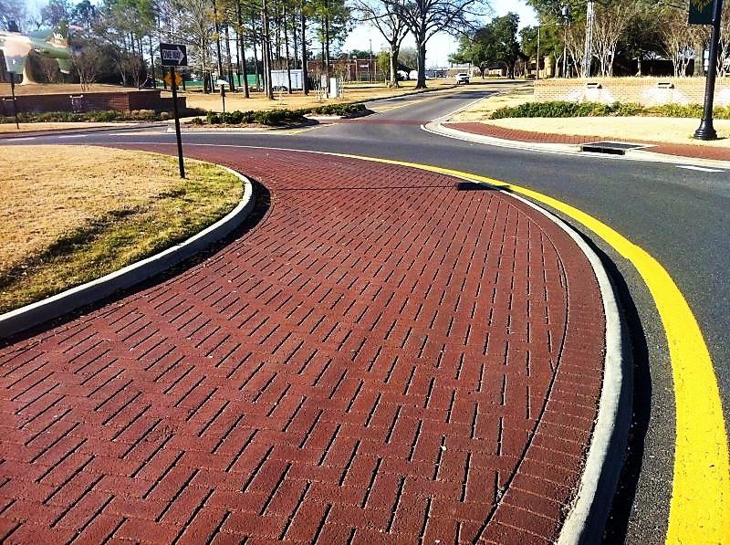

Decorative pavement · Texas
Pavement
that makes
a place.
Stamped asphalt, StreetBond coatings, decorative crosswalks and custom pavement artwork for communities, campuses and commercial spaces.

Selected work
View all projects

Have a place in mind?
(214) 364-0803
Based in Dallas. Serving all of Texas,
with out-of-state projects considered.